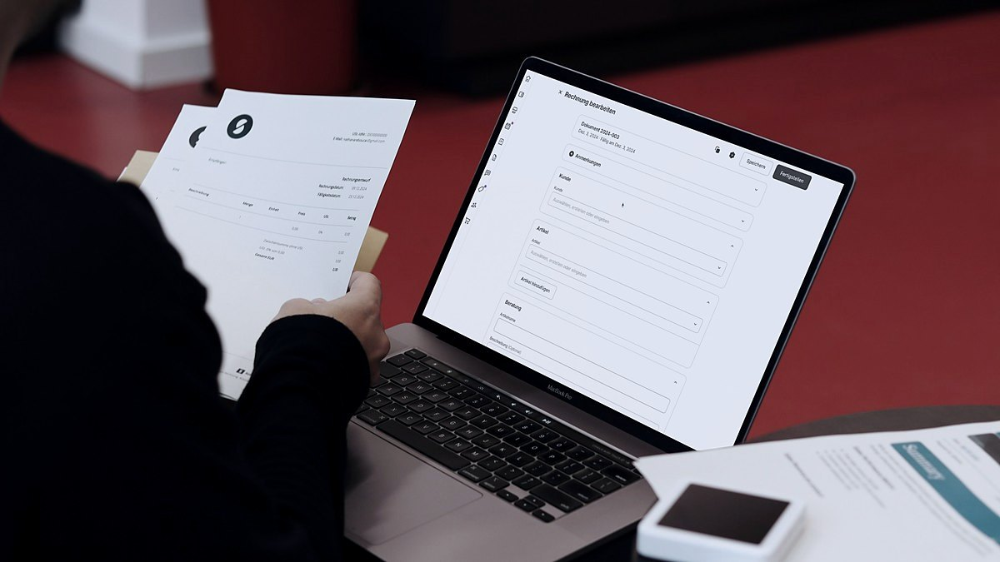

Bu yazı Türkçe yayımlanmıştır.
Giriş: "Zaten Gönderiyoruz, Sorun Ne?"
e-Dönüşüm projeleri çoğu şirkette teknik bir teslim işi gibi ele alınıyor: belge üretilsin, karşı tarafa ulaşsın, iş bitsin. Gerçekten de çözümün ilk haftası genellikle sorunsuz geçer. Sorunlar birkaç ay sonra, hep aynı yerden çıkar: ay sonu mutabakat masasından.
"Bu ay 4.812 fatura kesmişiz ama muhasebede 4.799 kayıt var, 13 fatura nerede?" Bu soruyu bir kez soran herkes, e-belge sürecinin aslında bir gönderim değil bir muhasebeleştirme süreci olduğunu anlar.
İki Mimari, İki Farklı Sonuç
Uygulamada karşımıza iki temel kurgu çıkıyor.
1. Yan Sistem Yaklaşımı
Faturalar SAP'de üretilir, bir arayüzle entegratöre ya da ayrı bir portala aktarılır. Kullanıcı belgenin durumunu SAP'de değil, o portalın ekranından takip eder.
Bu yaklaşım hızlı devreye alınır ve ilk bakışta ucuzdur. Ancak iki sistem arasında bir doğruluk boşluğu yaratır: SAP "gönderdim" der, portal "reddedildi" der ve ikisi birbirini otomatik olarak düzeltmez. Aradaki fark, her ay birinin elle bulması gereken bir işe dönüşür.
2. SAP İçinde Entegre Yaklaşım
Belge SAP'de üretilir, durum bilgisi (gönderildi, kabul, ret, iptal talebi) muhasebe belgesinin üzerinde izlenir. Kullanıcı ikinci bir ekrana geçmez; muhasebeci faturayı hangi ekranda kestiyse durumunu da orada görür.
Kurulumu daha fazla tasarım ister. Buna karşılık ay sonunda "kaç belge ürettik, kaçı karşı tarafa ulaştı, kaçı muhasebeleşti" sorusunun cevabı tek bir rapordan çıkar.
Yan Sistemin Görünmeyen Dört Maliyeti
- Mutabakat işçiliği. İki sistemin sayıları her ay karşılaştırılır. Bu, kimsenin bütçesine yazmadığı ama her ay tekrarlayan bir maliyettir. Fark küçükse bile bulunması saatler alır.
- İptal ve itiraz senaryoları. Kesilen bir belgenin iptali, karşı tarafın reddi ya da iade faturası; bunların her biri muhasebede bir karşılık gerektirir. Durum bilgisi SAP'ye geri akmıyorsa, muhasebe kaydı gerçeğin gerisinde kalır.
- Numaralandırma karmaşası. Belge numarası iki yerde üretiliyorsa, seri tutarlılığını korumak elle yapılan bir işe dönüşür. Denetimde en sık sorulan konulardan biri tam da budur.
- Arşiv ve erişim. Yasal saklama yükümlülüğü şirkete aittir; hizmet aldığınız tarafa değil. Belgeye yıllar sonra kimin, hangi sistemden ulaşacağı baştan netleşmezse, sorun ortaya çıktığında çözmek çok daha pahalıdır.
SAP Tarafında Gözden Kaçan Beş Nokta
Entegre kurguyu seçseniz bile tasarımda şu beş başlık netleşmeden projeye başlamayın:
- Muhasebeleştirme anı. Belge üretildiğinde mi, karşı tarafça kabul edildiğinde mi muhasebeleşecek? İkisi farklı dönemlere düşebilir ve dönem sonunda fark yaratır. Bu karar mali müşavirle birlikte verilmelidir.
- Durum alanlarının raporlanabilirliği. Belge durumu yalnızca ekranda görünen bir bilgi değil, üzerinde rapor çekilebilen bir alan olmalıdır. "Gönderilmiş ama kabul edilmemiş belgeler" listesi tek tuşla alınabilmelidir.
- İade ve iptal akışı. Satış iadesi, fiyat farkı ve iptal senaryolarının her biri için hangi belge türünün üretileceği baştan tanımlanmalıdır. Bu tanım eksikse kullanıcılar kendi pratik çözümlerini üretir ve muhasebe tutarlılığı bozulur.
- Alış tarafı. Projelerin büyük kısmı satış tarafına odaklanır; oysa gelen faturaların otomatik okunup satınalma siparişiyle eşleştirilmesi, çoğu şirkette daha büyük bir tasarruf alanıdır.
- e-Defter ile tutarlılık. Defter tarafı, muhasebe kayıtlarının doğrudan yansımasıdır. Yevmiye ve kebir arasındaki en küçük tutarsızlık dönem kapanışında sorun çıkarır; bu nedenle kapanış öncesi kontrolleri takvime yazılı adım olarak eklemek gerekir.
Devreye Almadan Önce Sorulacak Altı Soru
- Ay sonunda üretilen belge sayısı ile muhasebeleşen kayıt sayısını tek raporda karşılaştırabiliyor muyuz?
- Reddedilen veya iptal edilen bir belgenin muhasebe karşılığı otomatik oluşuyor mu, elle mi giriliyor?
- Belge numarası tek bir yerde mi üretiliyor?
- Gelen faturalar sipariş ve mal kabul kayıtlarıyla otomatik eşleşiyor mu?
- Beş yıl sonra bir belgeye hangi sistemden, kimin yetkisiyle ulaşacağız?
- Kapanış öncesi defter tutarlılık kontrolü, kapanış takviminde yazılı bir adım mı?
Bu altı sorunun hepsine rahatça "evet" diyebiliyorsanız kurgunuz sağlamdır. Birine bile tereddütle cevap veriyorsanız, o tereddüt er ya da geç bir ay sonunda karşınıza çıkar.
Sonuç
e-Dönüşüm, mevzuata uyum başlığı altında ele alındığında bir yük gibi görünür. Doğru kurgulandığında ise tam tersi olur: fatura kesme, mutabakat ve arşivleme süreçlerinin tek sistemde toplanması, ay sonu kapanışını kısaltan en somut adımlardan biridir.
Belirleyici olan hangi entegratörle çalıştığınız değil, belgenin muhasebe kaydıyla aynı yerde yaşayıp yaşamadığıdır.
Not: e-belge kapsamı, zorunluluk sınırları ve süreler zaman içinde değişmektedir. Bu yazı süreç ve mimari tarafını ele alır; kapsam ve yükümlülük değerlendirmesi için mali müşavirinizle birlikte karar vermenizi öneririz.
Mevcut kurgunuzu birlikte gözden geçirelim. Hangi adımların SAP dışında kaldığını çıkarıp, mutabakat yükünü nerede azaltabileceğinizi somut olarak konuşabiliriz. Kapsamı e-Fatura Otomasyonu çözümümüz sayfasında bulabilirsiniz.